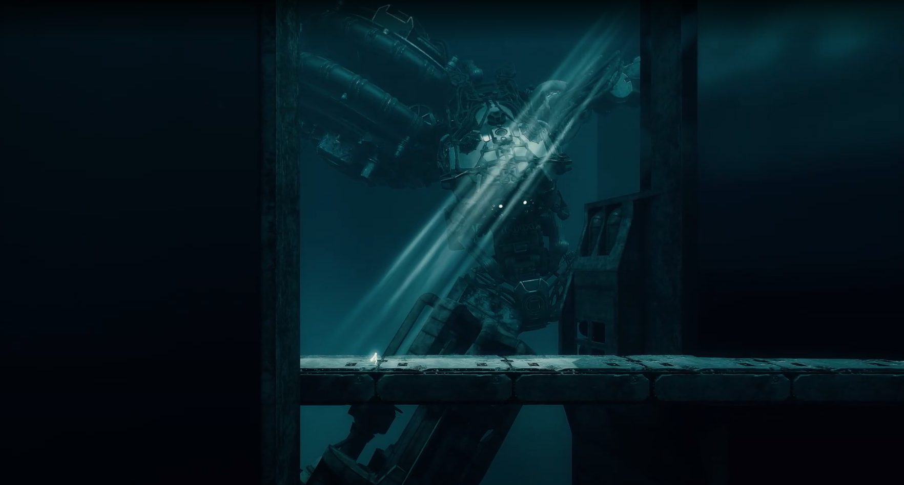

Projects
Check out my work in game development, graphics programming, and software engineering.
VIEW MY WORKFeatured Project
A recent highlight from my work in game engineering.

Project Rebirth
A post-apocalyptic action-narrative game built in Unreal Engine 5 with a team of 12+ through the CMU Game Creation Society. I engineered a physics-based balance puzzle system and a custom crane Pawn entirely in C++, featuring recursive weight calculation, event-driven updates, and sweep-based collision detection.
SEE FULL PROJECT →